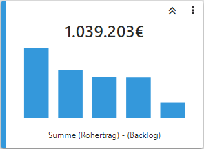
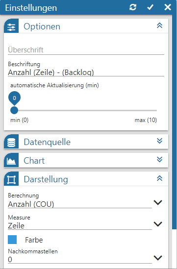
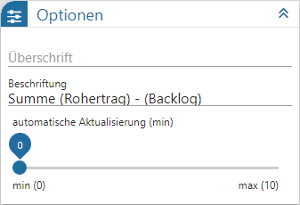
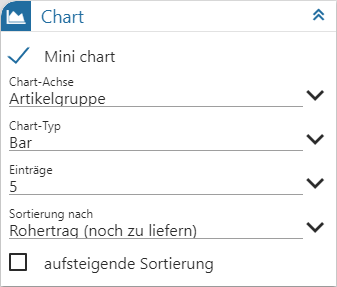
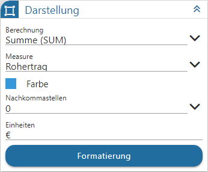
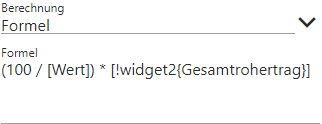

Power Report - Widgets - Kachel

Dieses Widget führt eine selbst zu definierende Berechnung der Measures aus und gibt diese Berechnung im Power Report aus.
Einstellungen

Folgende Eingabefelder, Einstellungen und Informationen stehen zur Verfügung:
Optionen

Ø Überschrift
An dieser Stelle wird die Bezeichnung der Kachel definiert.
Ø Beschriftung
An dieser Stelle wird die Beschriftung der Kachel definiert. Diese wird in der Kachel unterhalb der berechneten Measure angezeigt.
Ø automatische Aktualisierung (min)
An dieser Stelle kann definiert werden, ob sich der Inhalt der Kachel automatisch aktualisieren soll. Mit der Einstellung "0" findet keine Aktualisierung statt.
Ø Power Report - Vorlage
Werden die Einstellungen der Kachel über das WinLine Cockpit aufgerufen, so steht die Option "Power Report - Vorlage" zur Verfügung. Über diese kann definiert werden, welche Vorlage des Power Reports angezeigt werden soll, wenn dieser über die Funktion "in Power Report öffnen" bzw. bei einem Klick auf die Zahl der Kachel geöffnet wird.
Datenquelle

Ø Datenquelle
Dieses Informationsfeld zeigt den Namen der zu Grunde liegenden Datenquelle an.
Ø Datenherkunft
An dieser Stelle kann mit Hilfe einer Auswahlliste definiert werden, aus welchem Bereich der Datenquelle die Daten des Widgets stammen sollen. Die Auswahl "aktuell" steht immer zur Verfügung und spiegelt die im Ausgangsfenster gewählte Datenquelle (temporäre Datenquelle, Snapshot, View oder MasterView) wieder.
Hinweis
Gibt es für die Datenquelle mehrere Snapshots, so sind diese über den Eintrag "xxx (statisch)" (xxx => Name der Auswertung) zusammengefasst. Innerhalb der Snapshots erfolgt die weitere Selektion über den Widget Filter.
Ø  Widget Filter
Widget Filter
Durch Anwahl dieses Buttons wird das Fenster Widget Filter geöffnet. In diesem kann die genutzte Datenquelle nach frei definierbaren Kriterien eingeschränkt werden.
Hinweis
Handelt es sich nicht um eine importiere Datenquelle, so werden die folgenden Selektionskriterien automatisch vorgegeben, wobei ein Editieren selbstverständlich möglich ist:
ü Mandant
Es wird durch die
Filterzeile "Mandant = aktuell" automatisch auf die Daten des aktuellen Mandaten
eingegrenzt.
ü Selektion 1 bis 4 / Filter
Es
wird automatisch auf die Daten jenes Snapshots eingegrenzt, über welchen der
Power Report ausgegeben wurde. Die Filterzeilen hierzu lauten "Selektion X =
aktuell" bzw. "Filter = aktuell".
Hinweis
Mit Hilfe des Widgets Datenquellen Info ist jederzeit nachvollziehbar, was sich gerade hinter "aktuell" verbirgt (Einstellung "Aktuelle Sel.").
Chart

Ø Mini chart
Neben der berechneten Zahl kann auch eine kleine Grafik dargestellt werden. Über diesen Schalter wird sie aktiviert, wodurch auch die nachfolgenden Felder zur Verfügung stehen.
Hinweis
Der Chart steht bei Nutzung der Berechnung "Formel" nicht zur Verfügung.
Ø Chart-Achse
Über eine Auswahlliste kann die Dimension für das Chart gewählt werden.
Ø Chart-Typ
An dieser Stelle wird die Art des Chart angegeben, wobei "Bar" und "Spline" zur Verfügung stehen.
Ø Einträge
Mit Hilfe einer Auswahlliste wird die Anzahl der maximalen Einträge im Chart hinterlegt.
Ø Sortierungen nach
An dieser Stelle wird die Sortierung innerhalb des Mini Charts definiert.
Ø aufsteigende Sortierung
Mit Hilfe dieser Einstellung kann auf- oder absteigend sortiert werden.
Darstellung

Ø Berechnung
An dieser Stelle wird die Berechnung definiert, d.h. was mit dem Wert aus dem Feld "Measure" getan werden soll. Folgende Varianten stehen zur Verfügung:
ü Summe (SUM)
Mit dieser Option
werden alle Werte summiert und dementsprechend angezeigt.
ü Anzahl (COU)
Mit dieser Option
wird angezeigt, wieviel Datensätze in der Auswertung vorhanden sind.
ü Kleinste (MIN)
Mit dieser
Option wird der kleinste Wert der Auswertung angezeigt.
ü Größte (MAX)
Mit dieser Option
wird der größte Wert der Auswertung angezeigt.
ü Durchschnitt (AVG)
Mit dieser
Option wird der durchschnittliche Wert der Auswertung angezeigt.
ü Formeln
Mit dieser Option
können eigene Werte mittels einer Formel berechnet werden.
Ø Measure (nicht bei Berechnung "Formel")
Mit Hilfe einer Auswahlliste kann das Zahlenfeld für die Berechnung ausgewählt werden.
Ø Formel (nur bei Berechnung"Formel")
An dieser Stelle können eigene Berechnungen, z.B. zur Ermittlung von Prozentsätzen, hinterlegt werden. Neben dem manuellen Schreiben der Formel, steht ein Assistent zum Einfügen von Variablen zur Verfügung. Dieser wird durch Eingabe eines . (Punkt) aktiviert und stellt folgende Auswahlen zur Verfügung:
ü Measure
Es kann auf die Daten
der Kachel selbst zugegriffen werden. Hierbei werden ggfs. getroffene
Selektionen aus dem Widget Filter berücksichtigt.
ü Kachel
Es kann auf den Inhalt
(d.h. die Zahl) von anderen Kacheln zugegriffen werden.
Hinweis
Variablen werden stets in [ ] (eckige Klammern) eingefasst. Bei einem Zugriff auf anderen Kachel wird dieses durch ein ! (Ausrufezeichen), gefolgt von der internen Kachel-ID (z.B. Widget2), angegeben. Zusätzlich wird die zu diesem Zeitpunkt hinterlegte Beschriftung als weiterführende Information in { } (geschweifte Klammern) dargestellt.
Beispiel

Es soll der prozentuale Anteil des Rohertrags vom Gesamtwert dargestellt werden. Der Gesamtwert ermittelt sich direkt über den Wert der Kachel (Measure [Wert]), der Rohertrag wiederum aus einer anderen Kachel (Kachel mit der internen ID widget2 und der Beschriftung Gesamtrohertrag).
Ø Farbe
Der Kachel kann an dieser Stelle eine Farbe zugewiesen werden.
Ø Kommastellen
Aus einer Auswahlliste kann die Anzahl der Nachkommastellen für die Anzeige in der Kachel definiert werden.
Ø Einheit
Für den Zahlenwert in der Kachel kann hier ein Zusatz definiert werden, d.h. was "ist" die Zahl.
Ø Formatierung
Um direkt auf "wichtige" Measures bzw. Kacheln aufmerksam gemacht zu werden, steht die Formatierung zur Verfügung. Diese ermöglicht es, den Kachelinhalt nach bestimmten Regeln gesondert darzustellen.
Beispiel
Buttons

Ø Aktualisierung
Mit Hilfe dieses Buttons werden die Einstellungen gespeichert, direkt angewendet und das Einstellungsfenster bleibt geöffnet.
Ø Ok
Durch Anwahl des Buttons "Ok" werden die Änderungen angewendet und das Fenster geschlossen.
Ø Ende
Durch Anwahl des Buttons "Ende" wird das Einstellungsfenster geschlossen und nicht gespeicherte Änderungen verworfen.